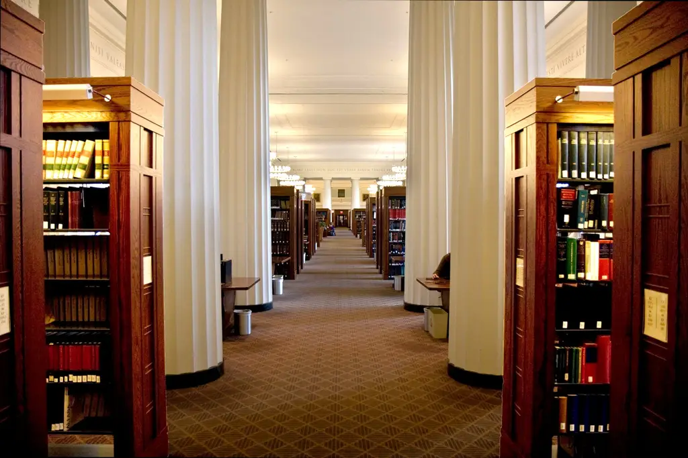

Anwalt für Migrationsrecht in Rosenheim
Dr. Kenan Ertunc M.A., Fachanwalt für Migrationsrecht, vertritt Sie auch im Familien-, Arbeits-, Straf- und Verkehrsrecht. Kanzlei in der Adlzreiterstraße in Rosenheim, Beratung in vier Sprachen.
Rechtsgebiete der Kanzlei
Schwerpunkt ist das Ausländer- und Asylrecht. Privatpersonen und Unternehmen werden außerdem in vier weiteren Gebieten beraten und vertreten.
- Ausländer- und Asylrecht
Aufenthaltstitel, Einbürgerung, Familiennachzug, Asylverfahren und Klagen gegen Bescheide.
Fachanwalt - Familienrecht
Trennung, Scheidung, Unterhalt, Sorge- und Umgangsrecht.
- Arbeitsrecht
Kündigung, Abfindung, Arbeitsvertrag und Zeugnis.
- Strafrecht
Verteidigung im Ermittlungs- und Strafverfahren.
- Verkehrsrecht
Unfallregulierung, Bußgeld und Führerschein.

Sprachen
Sie schildern Ihren Fall in Ihrer Sprache: auf Deutsch, Türkisch, Englisch oder Italienisch. Für Kurdisch und Arabisch arbeitet die Kanzlei eng mit Dolmetschern zusammen.
- Deutsch
- Türkçe
- English
- Italiano
So läuft Ihr Mandat ab
-
Erster Kontakt, kostenfrei
Sie schildern Ihr Anliegen am Telefon, per E-Mail oder in der Kanzlei. Sie erfahren, wie das Verfahren abläuft und welche Kosten voraussichtlich entstehen.

-
Prüfung Ihrer Unterlagen
Bescheide, Verträge und Schreiben werden geprüft. Sie erhalten eine Einschätzung Ihrer Lage und einen Vorschlag für das weitere Vorgehen.

-
Vertretung bei Behörden und Gerichten
Die Kanzlei führt den Schriftverkehr mit Behörden, Gegnern und Versicherungen und vertritt Sie vor Gericht.

Dr. Kenan Ertunc M.A.
Rechtsanwalt und Fachanwalt für Migrationsrecht, Mitglied der Rechtsanwaltskammer München und des Deutschen Anwaltvereins.
- Studium
Rechtswissenschaft, Arbeitswissenschaft und Europastudien in Bremen, Saarbrücken und Mailand.
- Promotion
Graduate School for Social and Political Science der Universität Mailand.
- Forschung
Gastforscher an der Warwick Business School und der University of Cambridge.
- Praxis
Syndikus und Rechtsanwalt in einer internationalen Wirtschaftskanzlei in München.

Kosten und Abrechnung
Der erste Kontakt ist kostenfrei. Wie danach abgerechnet wird, steht fest, bevor das Mandat beginnt.
RVG
Gesetzliche Gebühren
Nach dem Rechtsanwaltsvergütungsgesetz, abhängig vom Gegenstandswert.
Stundensatz
Stundenhonorar
Abgerechnet wird der Zeitaufwand zu einem vorher vereinbarten Satz.
Festbetrag
Pauschale
Ein fester Betrag für ein klar umrissenes Mandat.